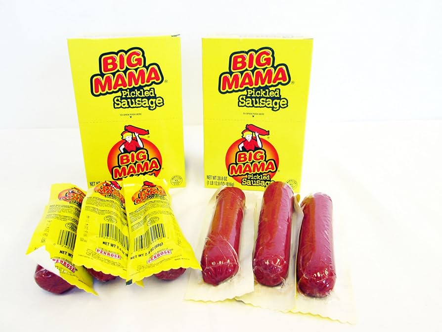

Big Mama

This is the big mama. This is no longer a recipe, but a descent into madness. Return to the recipe list now to retain what is left of your sanity
Keep reading if you are bold enough to confront the big mamacita.
The deadly ingredients
- Big
- Mama
- Sausage
- If sausage is not available, pig will work
Recipe steps (you can still turn back)
- First learn how to use bernoulli trials to properly calculate the chances of 2 or more sausages
gaining sentience and staging a coup against you and your family
- If the answer comes out to be higher than 5%, avoid this step and make a different food
- Bro why are you still reading this
- Why did you even click on a recipe that says big mama
- Find a big mama from your local grocery store
- Cook the big mama with olive oil on medium to high heat
- After the big mama is slightly charred, season with salt and pepper and enjoy (let it cool first!)
Do you feel good about yourself?
back to safety!